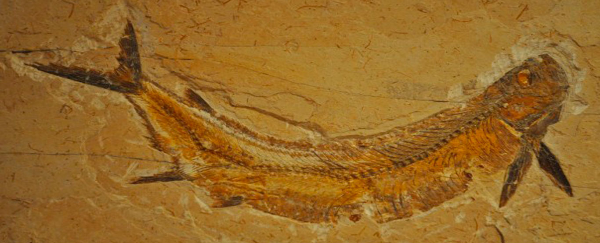

A FOSSILIZAÇÃO
Durante o falecimento de um ser vivo, seu corpo físico permanece exposto as adversidades do ambiente natural, implicando em condições climáticas e geológicas, fora a ação de outros animais para consumo da carne fresca ou putrefaça do organismo em óbito. Após a ação do meio ambiente, os restos mortais do animal são subjugados pelo solo, abaixo explicarei melhor a influência do tipo de solo para qualidade do fóssil. Vale ressaltar que após essas atuações, qualquer resto mortal é desaparecido, porém algumas partes tornam-se moldes presentes na rocha coberta de sedimentos e minerais onde o corpo é fossilizado, podendo encontrar impressões de como era a pele do animal em vida. Após enfrentar esses fatores adversos, inicia-se o processo de fossilização onde o material físico restante é enterrado por sedimentos, neste meio, pode-se observar 3 cenários possíveis para qualidade da fossilização em meio ao seu solo.
